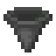
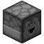
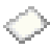
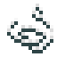
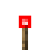
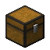
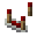
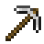
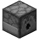
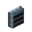

Networks: pages
Networks
Cable parts
How parts mount on cables and block faces, and every part that isn't a terminal - ports and their modules, the Inventory Tap, Threshold Sensor, Collector and Deployer Planes, Point-to-Point Link and Trunk Port.
On this page
Parts are small devices that mount on the face of a cable: they connect the network to the world around it. This page covers mounting parts in general and every part that isn't a terminal. The terminals (the Access Terminal, Fabrication Terminal, Schematic Terminal and Schematic Encoder) are parts too, and are on Access and Fabrication Terminals and Schematics.
| Part | What it does |
|---|---|
| Pulls items, fluids, gases or FE from the block it faces into the network. | |
| Pushes chosen items, fluids, gases or FE from the network into the block it faces. | |
| Makes the inventory it faces part of the network's storage, in place. | |
| Sends redstone while the network holds more, fewer or exactly some number of an item. | |
| Breaks the block in front of it and picks up dropped items, into the network. | |
| Places blocks or drops items from the network in front of it. | |
| Passes items, fluids, gases, FE, redstone or lanes straight between paired endpoints. | |
| Carries segments into the network it's on (VLAN trunking). |
Mounting parts#
On a cable. Use the part on a cable: it goes on the face you click. This works while sneaking too, so you can sneak to place a part beside a chest or machine without opening it. Each face takes one part (or one anchor or facade), and a face with a part on it no longer connects to anything.
On another block's face. Use the part on the face of any other block:
- If there's a cable in front of that face, the part goes on the cable's side toward the block. This is the easy way to put a port on a chest: run a cable past the chest, then use the port on the chest's face.
- If there's no cable but the space in front is free, the part is placed there on a Part Host, an internal block that holds a single part against the face. A Part Host is on the network only when the block it's mounted on is a network block that connects on that face, such as a terminal on the side of a Drive Bay or a controller. Mounted on anything else (a chest, a machine), it's offline.
So mount ports, taps, planes and links on cables, and use Part Hosts for terminals and sensors on the faces of network blocks. On a Part Host, terminals and the sensor face away from the block; the other parts face it.
Screenshot needed
A cable running past a chest and a furnace with an Inventory Tap facing the chest and an Ingress Port facing the furnace's output side, an Egress Port on the furnace's top, and an Access Terminal mounted on the side of a Drive Bay through a Part Host
docs/site-src/images/networks/cable-parts-mounting.png · 1600x900
Using and removing. Right-click a mounted part to open its screen. To take it off, use a wrench on it or sneak-use it with an empty hand: it drops with everything in it (modules, for instance; ghost filters drop nothing). Mining a cable takes off the part you're looking at before the cable itself.
On a network with a Firewall, putting a part on a cable needs BUILD, opening a terminal needs VIEW and opening any other part needs BUILD. See Firewall and security.
Parts on the network#
Each part is a device:
| Part | Lanes | Drain (FE/t) |
|---|---|---|
| Terminals | storage.terminalLanes (default 1) | storage.terminalDrain (default 0.5) |
| Every other part on this page | storage.partLanes (default 1) | storage.partDrain (default 0.5) |
| None | reach.p2pDrain (default 0.5) |
A cable carrying parts needs the sum of their lanes along its path, as well as carrying its own lanes on to the rest of the network. A part works only while its cable (or Part Host) is online, on a powered network with its lanes, and while it's enabled: ELCL's CHGDEVSTS can switch one off. The Terminal OS names parts by type, such as INGRESS01, EGRESS01, TAP01, SENSOR01, COLLECTOR01, DEPLOYER01, P2P01 and TRK01 (see WRKDEV).
Ingress Port and Egress Port#

encodedlogistics:ingress_port

encodedlogistics:egress_port
The Ingress Port pulls from the block it faces into the network; the Egress Port pushes from the network into the block it faces. Each moves one kind of thing at a time, picked with the resource-type button in its screen:
| Type | Ingress | Egress | Rate (0 to 3 Throughput Modules) | Cost |
|---|---|---|---|---|
| Items | Everything that passes the filter (an empty filter passes everything). What the network can't store stays put. | Only what passes the filter (an empty filter sends nothing), one item type per operation, in turn. | storage.portRates (default [4, 16, 32, 64]) items per operation, one operation every second | storage.portEnergyPerItem (default 0.5) FE per item |
| Fluids, and gases (Pressurized) | The same, from the faced block's tanks | The same, into its tanks | storage.portFluidRates (default [1000, 4000, 8000, 16,000]) mB per operation | storage.portEnergyPerBucket (default 2) FE per 1,000 mB |
| Energy | FE from the faced block into the network's pool | FE from the pool into the faced block | storage.portEnergyRates (default [1024, 4096, 16,384, 65,536]) FE per tick | None |
- Pressurized (gases) only appears when a gas mod is loaded: with Arcforge installed. See Arcforge.
- Energy has no filter, and an Egress Port never takes the pool below
rack.machinePowerReserve(default 0.25) of its capacity. - An Ingress Port also stores into storage that a Router or L3 Switch shares into its network (Read/Write Share routes) when its own is full, as a terminal does. An Egress Port only takes from the network's own storage.
- The port lights up while it moved something in its last operation, and its screen shows how much it moved in the last minute.
The filter. Nine ghost entries: click one with an item to set it (nothing is used up), or with a bucket or tank of a fluid or gas for a fluid or pressurized port. With JEI you can also drag items onto the entries.
Screenshot needed
An Ingress Port's screen with a few filter entries set, a Filter Module, two Throughput Modules and a Redstone Control Module in the module slots, the redstone and filter option buttons visible, and the moved-per-minute figure
docs/site-src/images/networks/port-screen.png · 1280x720
Port modules#
A port has four module slots. Modules are what make a port more than a simple pump:
| Module | Up to | What it does |
|---|---|---|
| 1 | Adds three filter options: deny (everything except the entries), tags (an item matches an entry it shares a c: tag with) and components (an item must also have the entry's exact components). Without it, the filter is a plain allow-list by item. | |
| 3 | Each one steps the port up to the next rate in the lists above. | |
| 1 | Lets each filter entry match loosely, set from the entry's context menu: any item in one of the entry's tags, or the entry's item at any damage, or worn 0-25%, 25-50%, 50-75% or 75-100%. | |
| 1 | Unlocks the redstone modes: ignore, high (work only while the cable it's on is powered), low (only while it isn't), and pulse (one operation each time it's powered). Without it the port ignores redstone. |

encodedlogistics:filter_module
encodedlogistics:throughput_module

encodedlogistics:fuzzy_match_module

encodedlogistics:redstone_control_module
The Filter and Fuzzy Match Modules also fit a Collector Plane.
Inventory Tap#

encodedlogistics:inventory_tap
An Inventory Tap makes the inventory it faces part of the network's storage, where it is: nothing is copied or moved. Terminals see what's in it, and the network stores into it. It covers the block's item slots, and its fluid and gas tanks.
- Access mode: read and write, read only (things only come out), or write only (things only go in).
- Filter: a 3×3 ghost filter limits what goes in and what the network sees. An empty filter passes everything.
- Priority: -999 to 999, typed in or stepped. Drive Bays are at 0. Higher priority is filled first and emptied last, so a tap at a high priority on a chest makes that chest the first place items go.
- It lights up while it's online and facing an inventory or tank.
Taps are how you bring an existing chest room, or a machine's output buffer, into the network without moving anything. See Hot and cold storage for how priorities order the network's storage.
Threshold Sensor#

encodedlogistics:threshold_sensor
A Threshold Sensor sends a redstone signal while the network's count of an item is above, below or equal to a threshold. Set the item (a ghost entry), type the threshold, and pick the comparison in its screen.
- It checks every 4 ticks.
- While the condition holds, it gives a strong signal of 15 into the block its face is against and a weak signal around it, like a lever. Redstone dust connects to a cable only while it carries a sensor.
- It's off while the network is offline or no item is set. Its lamp is lit while it's sending.
Mount it on a cable, or on the face of a network block through a Part Host. To drive more than on and off from the network, use a  Control Interface or a
Control Interface or a  Programmable Logic Controller (Control and facility).
Programmable Logic Controller (Control and facility).
Collector Plane and Deployer Plane#
Planes are flat plates that cover a whole cable face and work on the space in front of it. Planes of the same kind side by side on the same face join into one big plane (they share a connected texture), though each still works on its own block. A plane flashes each time it does something.

encodedlogistics:collector_plane
The Collector Plane breaks the block in front of it as an iron pickaxe would, and puts the drops into the network:
- It takes
reach.collectorTicksPerHardness(default 30) ticks per point of the block's hardness, and only breaks what an iron pickaxe can harvest. - It never breaks unbreakable blocks, network blocks, or blocks holding items.
- It only breaks a block when all of its drops pass the filter and fit in the network.
- It also picks up dropped items in that space, and fluid source blocks as 1,000 mB each.
- Its one module slot takes a Filter Module (the filter and its options apply) or a Fuzzy Match Module (the entries match loosely). Without one it takes everything.

encodedlogistics:deployer_plane
The Deployer Plane works from a 3×3 ghost list: every reach.deployerInterval (default 10) ticks it takes the first entry the network has, in order, and either:
- places it as a block in the space in front (block items only, into a free space), or, for a fluid or gas entry, places a source block of it using 1,000 mB; or
- drops one item out of its face.
The mode is a button in its screen. An empty list does nothing.
Screenshot needed
A 3x2 wall of Collector Planes on a row of cables, joined into one continuous plane, facing a cobblestone generator, one plane flashing as it breaks a block
docs/site-src/images/networks/planes.png · 1600x900
Point-to-Point Link#
encodedlogistics:point_to_point_link
A Point-to-Point Link passes one kind of thing straight across from an input endpoint to one or more output endpoints, without going through storage. One recipe makes two.
| Type | What crosses |
|---|---|
| Items | Every half second, up to reach.p2pItemsPerOperation (default 64) items from the inventory the input faces into the inventories the outputs face, in turn. |
| Fluids, Pressurized (gases) | Every half second, up to reach.p2pFluidPerOperation (default 8000) mB from the input's tanks into the outputs'. |
| Energy | Up to reach.p2pEnergyPerTick (default 8192) FE per tick from the block the input faces to the outputs'. |
| Redstone | The outputs give out the signal the input reads. |
| Lanes | The outputs' cables get reach.p2pLanes (default 8) lanes from the input's network, split evenly between the outputs (at least 1 each): in effect the outputs' cables join the input's network, as if a cable ran there. |
Items, fluids, gases, energy and redstone cross only while both ends are on the same running network, and they cost no FE per item. Lanes links are how you join a far-off cable run to a network without running cable to it.
Setting up a link.
- Place two endpoints. In each one's screen, pick the type and set one to Input (takes from the block it faces) and the other to Output (gives to the block it faces). Both settings lock once it's paired.
- Sneak-use a
 Link Card on one endpoint to store it, then use the card on the other to pair them.
Link Card on one endpoint to store it, then use the card on the other to pair them. - To add more outputs to the same input, use the card on more outputs: it keeps the input's address.
Both ends must be the same type, opposite directions, and in the same dimension. An output has one input; an input can have many outputs. The Unpair button in the screen undoes it. The ring on a paired endpoint glows. Every two seconds an endpoint drops partners that no longer point back to it (one that was broken or paired elsewhere).
Warning
A lanes link to a cable run with its own controller joins two controllers on one network, which is a conflict. Only one side may have a controller.
Trunk Port#
encodedlogistics:trunk_port
The Trunk Port is VLAN trunking on a cable: it carries segments (the networks beyond Segment Isolators) into the network it's on. Every Server Rack on that network can then put its pooled devices on those segments, without a Link Card of its own.
- Linking segments. Use a Link Card holding a segment (or a network) on the port, without sneaking. That links it, or unlinks it if it's already carried. A Trunk Port carries up to eight segments, with IDs 10, 20, 30 and so on.
- Modes. In Trunk mode (the default) it carries all its segments, or the ones you pick, plus a native segment. In Access mode it carries just the native segment.
- Its panel. Right-click it for its mode, the segments it allows, the native segment, and unlink. Changes need the Firewall's BUILD permission. The panel also shows the lanes the devices on its segments use against
rack.trunkPortLanes(default 64), as a guide. - Segments on one trunk still can't see each other's storage. Only an L3 Switch or a Router routes between them.
What trunk and access ports mean, and how rack devices are put on segments, is on Switches and VLANs; segments themselves are on Segments.
Wireless ports#
The  Wireless Egress Port are Ingress and Egress Ports that need no cable: they reach their network through a Wireless Controller. They work just like the ports above. See Wireless.
Wireless Egress Port are Ingress and Egress Ports that need no cable: they reach their network through a Wireless Controller. They work just like the ports above. See Wireless.